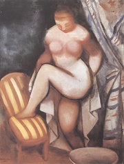
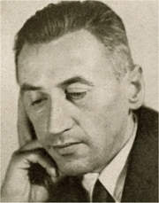
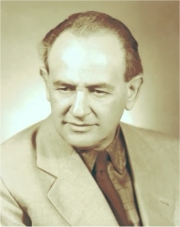
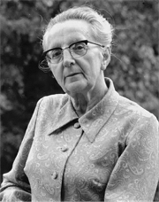
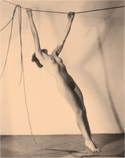
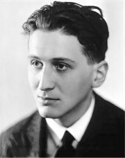
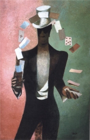
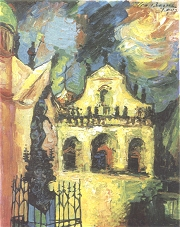

|
Kdo byla Psyché?
Jaký je tvůj názor na parapsychologii a psychotroniky?
Čím se zabývá psychohygiena, psychopatologie, psychosomatika, psycholingvistika a psychofyziologie?
|
PSYCHOLOGICKÁ PRÓZA
Výrazným proudem české literatury 30. a 40. let 20. století byla psychologická próza. Její autoři využívají nejnovější poznatky z psychologie a psychiatrie. Před realistickými popisy upřednostňují ponor do duševního života postav.
Obzvláště v době okupace zažívá tento druh psaní rozkvět, protože o skutečném životě autoři psát nemohou. Uchylují se tedy k alegoriím, v nichž rozebírají obecné principy zla.
Po roce 1948 se oficiální literaturou staly schematické budovatelské romány, ve kterých nezbylo pro psychologickou hloubku postav místo...
|
Jaký je rozdíl mezi psychologem, psychiatrem, psychoanalytikem a psychoterapeutem?
Co je psychodrama?
Jaký je rozdíl mezi neurotikem, neurastenikem, psychotikem a psychopatem?
Které termíny pro duševní nemoci znáš?
Jak bývají nazýváni duševně nemocní lidé?
|
Jaroslav Havlíček (1896-1943)
Havlíček se narodil v Jilemnici a zemřel v Praze. Byl otcem surrealisty Zbyňka Havlíčka. Je autorem psychologických románů Petrolejové lampy, Vlčí kůže, Neviditelný, Ta třetí a Helimadoe nebo novely Synáček.

Rudolf Kremlička: Osušující se žena
|
Jaroslav Havlíček: Petrolejové lampy
Román Petrolejové lampy měl být prvním dílem nerealizované trilogie z prostředí Jilemnicka. Hlavní hrdinkou je Štěpa Kiliánová, která si v mládí často hrávala s bratranci Janem a Pavlem Malinovými. Pavel se později stane důstojníkem, je líný, namyšlený, střídá ženy, opíjí se, oddává se karbanu a zadluží rodinný statek. Když je suspendován a bratr Jan ho odmítne podporovat, dvoří se vypočítavě Štěpě, o kterou jiní muži nestojí. Štěpa nechce zůstat starou pannou a touží po dětech. Proto si na rodičích vyvzdoruje svatbu. Neví ale, že Pavel onemocněl syfilidou a nemůže mít děti. Postupně se u něj projevuje progresivní paralýza. Štěpa o duševně chátrajícího manžela oddaně pečuje. Nakonec ho ale Jan přes její nesouhlas odveze do ústavu pro choromyslné, kde Pavel umírá. Štěpa začíná nový, snad šťastnější život s Janem.
|

Jak se projevovala Pavlova choroba?
Charakterizuj Štěpu.
Jak se chováš k duševně nemocným?
Patří duševně nemocní do ústavů? Proč?
Zjisti, jak vznikl název knihy Helimadoe.
|
Václav Řezáč (1901-1956)
Václav Voňavka se narodil i zemřel v Praze. Příjmení Řezáč převzal od své manželky. Ve dvou letech přišel o otce. Po maturitě se stal úředníkem. Je autorem psychologických románů Větrná setba, Slepá ulička, Černé světlo, Svědek a Rozhraní. Pro mládež napsal knihy Kluci, hurá za ním a Poplach v Kovářské uličce. Přivydělával si i psaním detektivek. Po roce 1948 vydal propagandistické romány o osidlování pohraničí po vyhnaných Němcích Nástup a Bitva psané v duchu socialistického realismu a vedl nakladatelství Československý spisovatel.
|
Václav Řezáč: Svědek
Mysteriózní román Svědek se odehrává ve fiktivním městě Bytni, do kterého přichází Emanuel Kvis. Je to prázdný člověk, který parazituje na pocitech ostatních lidí. Umí se do nich vžít a už svou fyzickou přítomností podněcuje temné stránky lidské duše. Obyvatelé Bytně se pod jeho vlivem proměňují. Strážník Tlachač se vloupá do obchodu, Josef Dastych se vrhne na hazard a alkohol a málem přijde o všechen majetek, starosta Nolč chce zase zabít spícího tuláka... Všichni ale svých činů i myšlenek litují. Když Kvisovi vyzná lásku jeho posluhovačka Božka, uvědomí si prázdnost svého života, selhává mu srdce a umírá.
Řezáčův román vznikl v době protektorátu. Hlavní postavu Kvise můžeme chápat jako alegorický symbol zla.
|

Na co se autor soustředil v této ukázce?
Jaký je tvůj názor na starostu Nolče? Táhly ti někdy hlavou obdobné myšlenky? Proč takové myšlenky vznikají? Jak se s nimi může člověk vypořádat?
Máš nějaké tajné přání? Zkus ho opsat tak, abys ho nemusel/a vyslovit.
Jaký je význam slova kviz?
|
Jarmila Glazarová (1901-1977)
Glazarová pocházela z Malé Skály u Turnova a zemřela v Praze. V 15 letech osiřela a se svými sestrami žila v internátní škole, za války přeměněné na vojenský lazaret. Po roce 1948 se stala prominentkou komunistického režimu. Napsala knihy Roky v kruhu nebo Chudá přadlena. Její romány Advent a Vlčí jáma byly zfilmovány.
|
Jarmila Glazarová: Vlčí jáma
Román Vlčí jáma líčí milostný trojúhelník. Do bezdětné rodiny zvěrolékaře Roberta Rýdla a jeho o dvanáct let starší manželky Kláry přichází osmnáctiletá osiřelá dívka Jana. Maloměstská panička Klára svými vrtochy tyranizuje okolí a Robert s ní není šťastný. Postupně se sblíží s Janou, ale když zjistí, že je nevyléčitelně nemocný, rezignuje na nový vztah a zůstává s manželkou. Po smrti Roberta a Kláry Jana odchází za místním lékařem, který ji už dávno miloval.
|

Charakterizuj Janu a tetu Kláru.
Rozumíš nářečí na konci ukázky? Pokus se méně známá slova vyložit, pak zjisti jejich přesný obsah.
Egon Hostovský (1908-1973)
Hostovský pocházel z Hronova, zemřel v americkém Montclairu. Období protektorátu strávil ve Francii a USA, kam se vrátil roku 1950. Živil se jako nakladatelský redaktor, diplomat, učitel nebo novinář Rádia Svobodná Evropa. Je autorem psychologických próz Ghetto v nich, Danajský dar, Případ profesora Körnera, Černá tlupa, Žhář nebo Dům bez pána. K existencialismu mají blízko jeho knihy z doby emigrace – Listy z vyhnanství, Sedmkrát v hlavní úloze, Úkryt, Cizinec hledá byt, Dobročinný večírek, Nezvěstný, Půlnoční pacient, Všeobecné spiknutí. Literární dobrodružství českého spisovatele v cizině je knihou vzpomínek.

František Drtikol: Akt
|
Egon Hostovský: Všeobecné spiknutí
Existenciální román Všeobecné spiknutí vznikl v době autorova exilu v USA a je částečně autobiografický. Zachycuje životní krizi emigranta Jana Bareše. Při oslavě šestačtyřicátých narozenin ho náhle přepadá nevolnost. Zdá se mu, že mezi hosty vidí mrtvého spolužáka Jiřího Becka. Propukne u něj stihomam a myslí si, že se stal obětí všeobecného spiknutí. Pohádá se s přáteli, není schopen psát. Ve vzpomínkách se vrací do meziválečného Československa a rozmlouvá s Beckem, který se vydával za jeho přítele, nutil ho k tajné spolupráci s komunisty, pohaněl jeho román a neustále ho pronásledoval. Spisovatel nakonec vítězí nad svými úzkostmi, nachází sám sebe a novou životní jistotu.
Román Všeobecné spiknutí vyšel roku 1969.
Další autoři a jejich díla
Marie Pujmanová: Předtucha
Anna Maria Tilschová: Vykoupení, Orlí hnízdo, Alma mater, Haldy
Josef Kopta: Hlídač č. 47
Jan Drda: Městečko na dlani, Putování Petra Sedmilháře
Ivan Olbracht: O zlých samotářích, Žalář nejtemnější, Podivné přátelství herce Jesenia, Zamřížované zrcadlo
|

Jaký je Bareš?
Charakterizuj jeho kamarády.
Srovnej názory románových postav se svými.

František Tichý: Kouzelník
|
Internetové stránky
Jaroslav Havlíček
Václav Řezáč
Jarmila Glazarová
Egon Hostovský
Tipy
Máme otevřeno
Dobromysl
Exkurze
Mezi ploty, festival
Nejbližší léčebna duševně nemocných
Vesmírna
|
Doporučená četba
Buriánek, František: Jarmila Glazarová, Ostrava 1987
Dílo Jaroslava Havlíčka (8 svazků)
Ginzburg, Lidija Jakovlevna: Psychologická próza, Praha 1982
Glazarová, Jarmila: Vlčí jáma, SNKLU, Praha 1962
Götz, František: Václav Řezáč, ČSS, Praha 1957
Havlíček, Jaroslav: Neviditelný, Praha 1966
Havlíček, J.: Petrolejové lampy, ČSS, Praha 1987
Hostovský, Egon: Cizinec hledá byt, Dobročinný večírek , Akropolis, Praha 2002
Hostovský, E.: Černá tlupa. Žhář, ERM, Praha 1995
Hostovský, E.: Všeobecné spiknutí, Akropolis, Praha 1998
Papoušek, Vladimír: Existencialisté, Torst, Praha 2005 (Čep, Havlíček, Hostovský, Weiner, Kolář...)
Spisy Egona Hostovského (12 svazků)
Rumler, Josef: Epik Jaroslav Havlíček, Praha 1973
Řezáč, Václav: Černé světlo, Svědek, Praha 1988
|
Vypracuj písemný referát o některé z uvedených knih.

Jan Bauch: Kostel svatého Salvátora
|
|
|